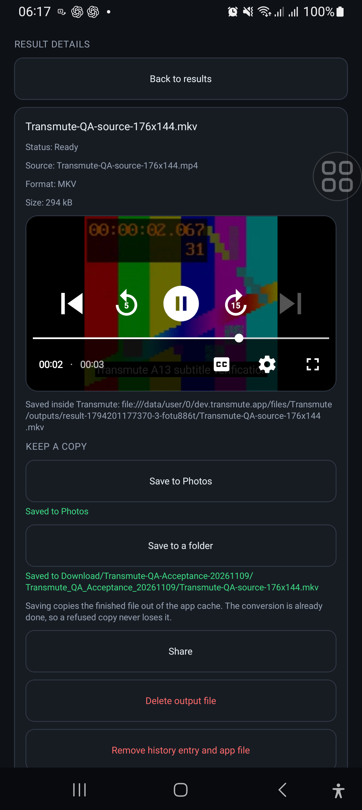

VIDEO FORMATS
Convert video
Choose a local video and an output format. Follow progress in the queue and reopen completed files in Results.
ANDROID / LOCAL FIRST
Convert videos, pull out audio, work with subtitles, and turn a video clip into an animated GIF. Transmute works offline, with files stored on your device.
A signed beta download will appear here after release verification.
Same moving QA clip, converted and previewed in Transmute Results on a Samsung A13.
MADE FOR THE EVERYDAY FIX
Choose a local video and an output format. Follow progress in the queue and reopen completed files in Results.
Pick a short range, set width and frame rate, and get one silent GIF with its proportions preserved.
A13 VERIFIED / 72 FRAMESEmbed supported subtitle tracks, extract a track to SRT or VTT, and preview subtitle Results directly in the app.
Make an audio file from a video on the device. Save a separate copy or share it when you choose.
A REAL RESULT, ON A SAMSUNG A13
For tested MP4 and MKV files, open the finished video in Results and use the native caption controls. Subtitle files can also be previewed without a folder picker.
Known player limit
On the tested A13, the player did not expose embedded caption tracks in MOV or WebM, even when probes found the streams. Those files need an external player for embedded caption playback.

VERIFIED BEHAVIOR, WITH LIMITS
These checks describe the tested Android 14 Samsung A13 build. They are not a promise that every codec variant or container combination works.